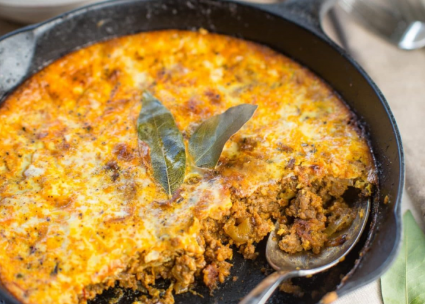
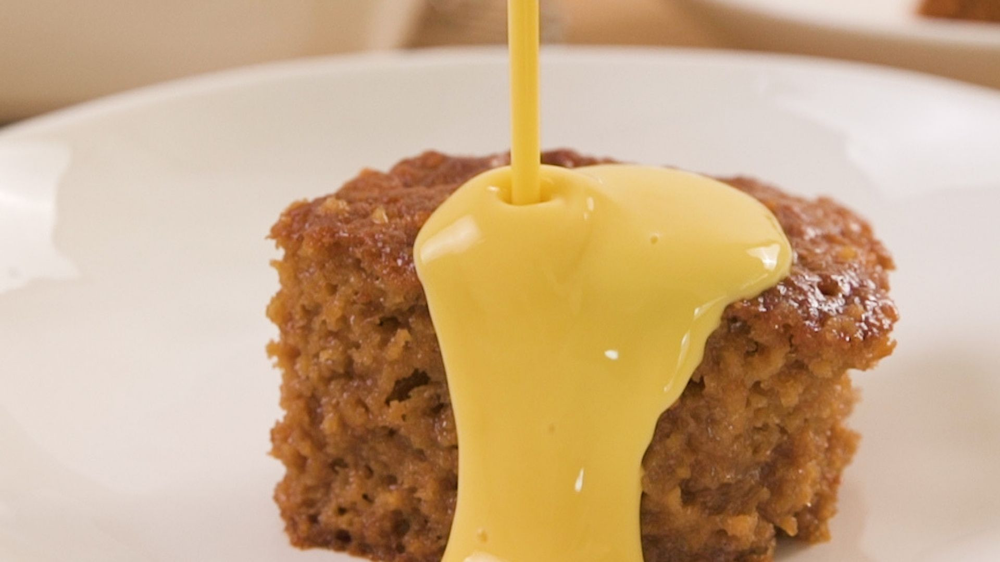
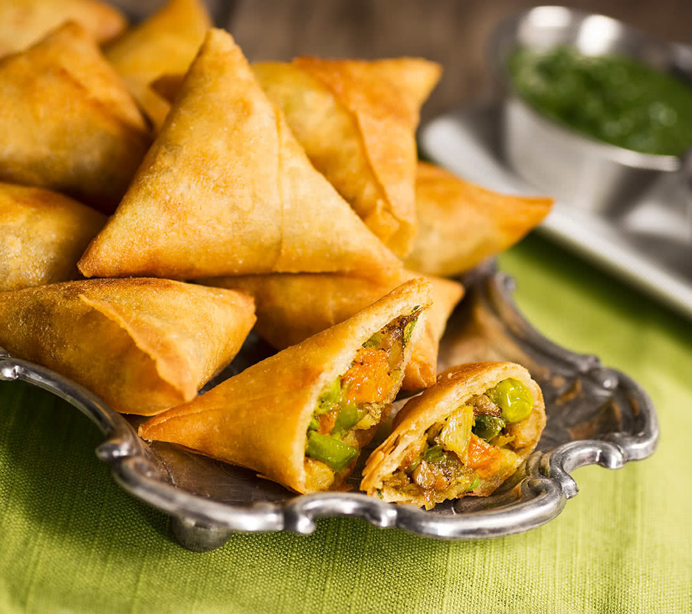

Bobotie is een populaire Zuid-Afrikaanse ovenschotel die vaak wordt beschouwd als het nationale gerecht van Zuid-Afrika. Het is een smaakvolle en aromatische schotel met een rijke geschiedenis en invloeden van verschillende keukens, waaronder Maleisisch, Nederlandse, Indiase en Kaap-Maleise.
Bobotie is een geliefd gerecht in Zuid-Afrika en wordt vaak geserveerd bij speciale gelegenheden en feesten. Het is een smakelijke en hartverwarmende maaltijd met een unieke smaak die zeker het proberen waard is als je de kans krijgt om Zuid-Afrikaanse keuken te ervaren.
Malva pudding is een heerlijk Zuid-Afrikaans dessert dat populair is in het land. Het is een zoete en plakkerige cakeachtige pudding die vaak wordt geserveerd met vla (custard) of vanillesaus.
Malva pudding wordt meestal geserveerd terwijl het nog warm is, en er wordt vaak een royale hoeveelheid vla over gegoten. De pudding is rijk, zoet en plakkerig, terwijl de vla zorgt voor een heerlijke zachtheid en romigheid. Het is een favoriet bij veel Zuid-Afrikanen en wordt vaak genoten bij speciale gelegenheden of als comfortfood.
Samosa is een populaire snack die oorspronkelijk uit Zuid-Azië komt en zich over de hele wereld heeft verspreid. Het is een hartig gerecht dat bestaat uit een knapperige, driehoekige of kegelvormige deegomhulling, gevuld met een mengsel van aardappelen, groenten, vlees
Samosa's worden meestal geserveerd als een heerlijke en knapperige snack. Ze worden vaak geserveerd met chutney, zoals tamarindechutney of muntsaus, voor extra smaak. Samosa's kunnen ook worden genoten als tussendoortje bij theetijd of als een bijgerecht bij maaltijden. Ze zijn veelzijdig en kunnen zowel als straatvoedsel worden verkocht als in restaurants worden geserveerd. Samosa's zijn geliefd vanwege hun smaak, knapperige textuur en de mogelijkheid om te spelen met verschillende vullingen en smaakcombinaties. Ze zijn populair in veel delen van de wereld en worden vaak aangeboden in Indiase, Pakistaanse en andere Zuid-Aziatische restaurants. Samosa's zijn een smakelijke en bevredigende snack die zowel vegetariërs als vleeseters kunnen waarderen.